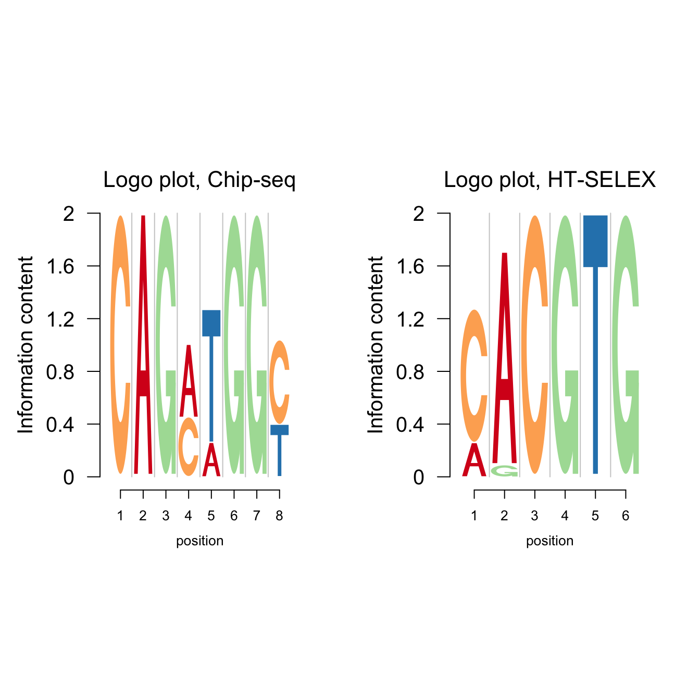
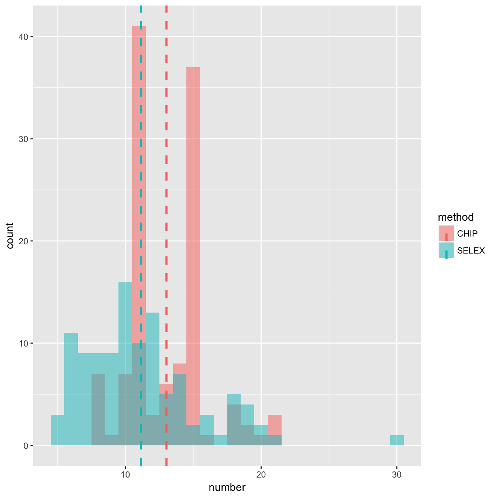
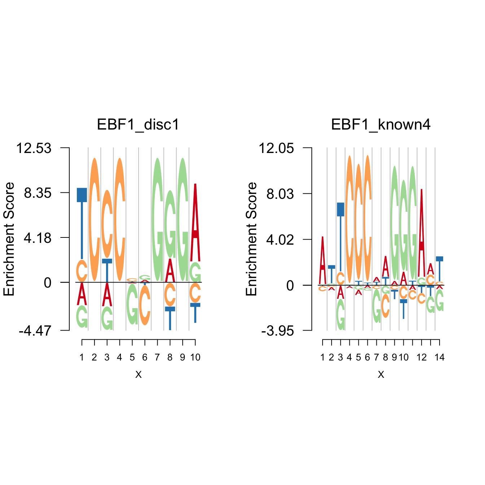
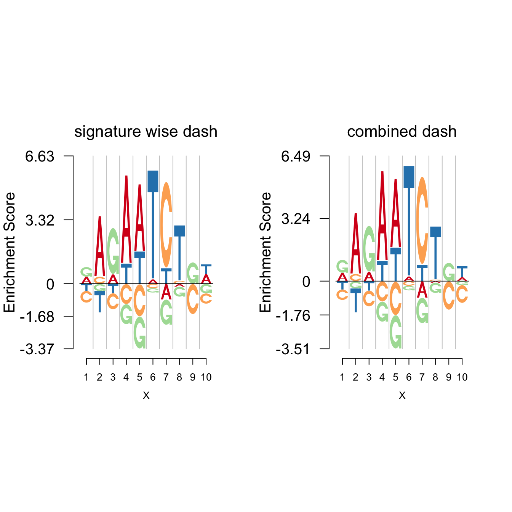
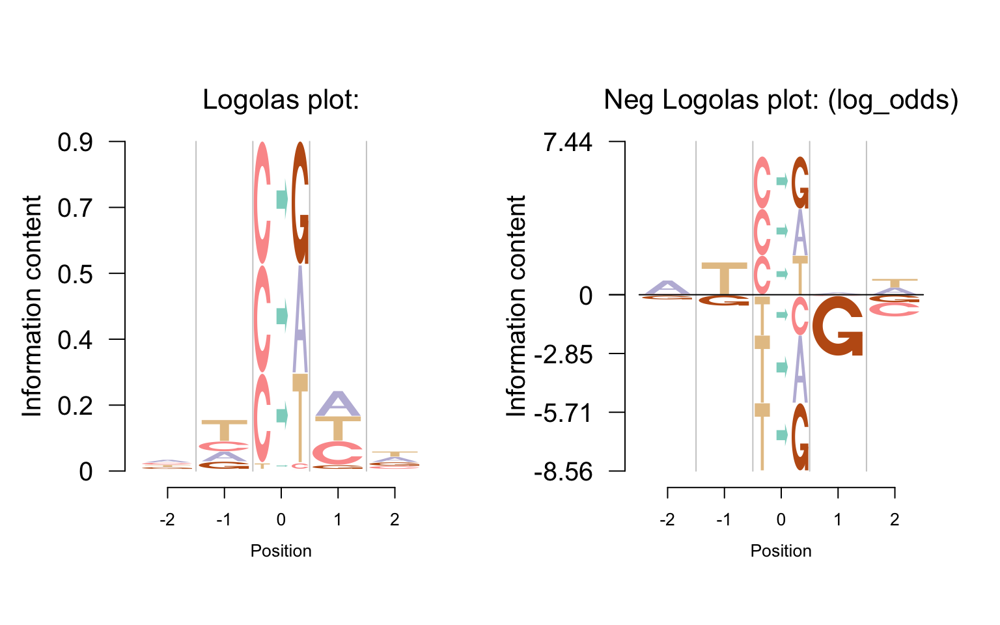
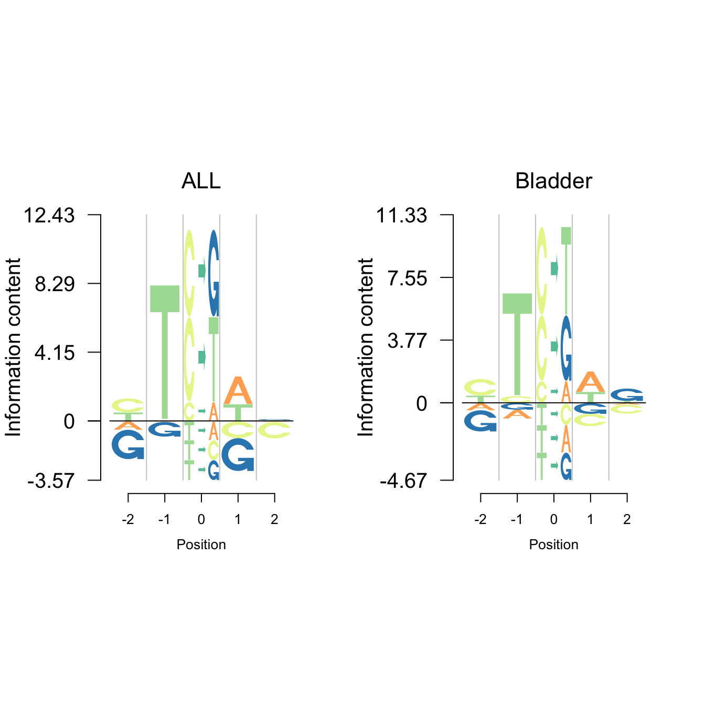
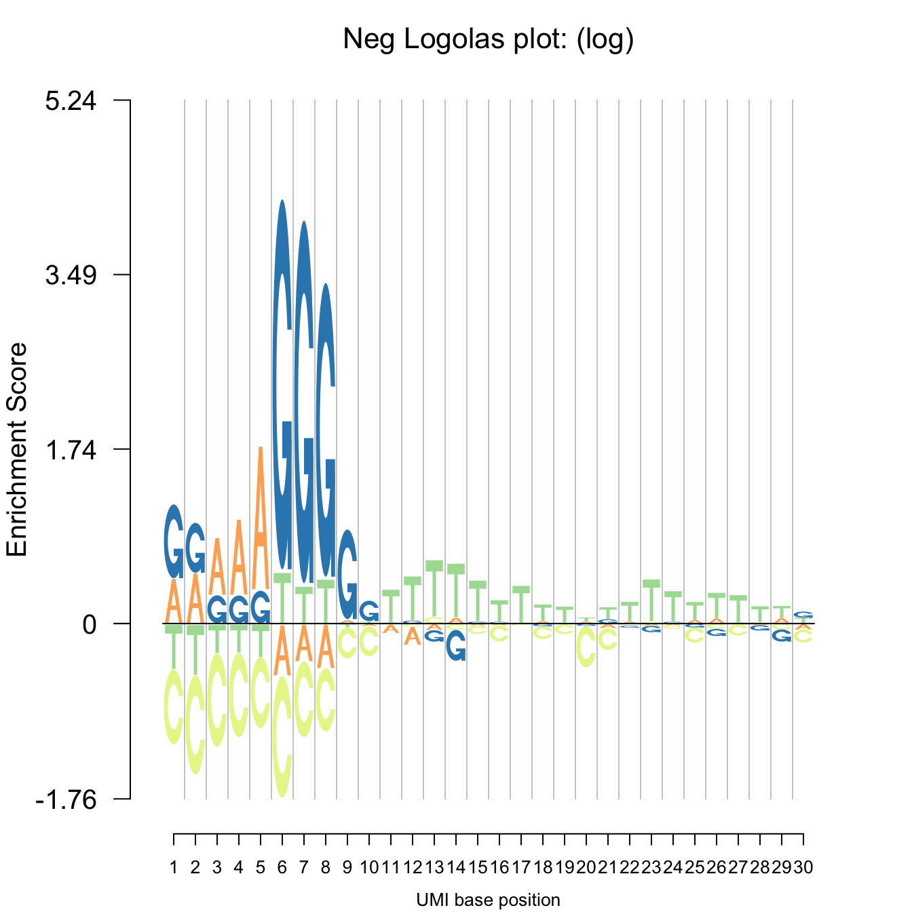
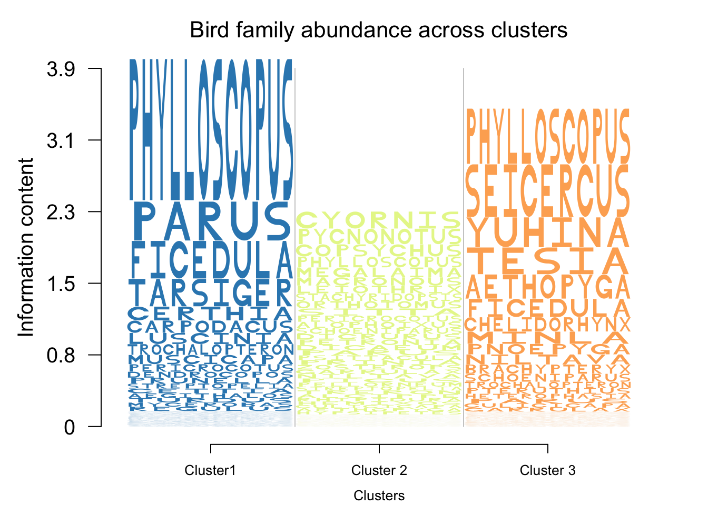

Last updated: 2017-09-27
Code version: 9febfe5
We now proceed to demonstrate various applications of Logolas.
Logo plots have the most widespread use in modeling Transcription Factor Binding Sites (TFBS). We also present here applications of the Logolas plots under different settings to the TFBS data available from several databases: e.g.
Common methods to obtain TFBS data include Chip-seq, Chip-Chip, HT-SELEX, etc.
The figure below shows the application of Logolas on the TFBS data from Chip-seq and HT-SELEX. The data of these examples are from JASPAR2014.
library(JASPAR2014)
library(TFBSTools)
library(Logolas)
library(Matrix)
library(atSNP)
color_profile = list("type" = "per_row",
"col" = RColorBrewer::brewer.pal(4,name ="Spectral"))
opts_ht=list()
opts_ht[['type']]='SELEX'
pfm_ht=getMatrixSet(JASPAR2014,opts_ht)
opts_chip=list()
opts_chip[['type']]='ChIP-seq'
pfm_chip=TFBSTools::getMatrixSet(JASPAR2014,opts_chip)
library(grid)
grid.newpage()
layout.rows <- 1
layout.cols <- 2
top.vp <- viewport(layout=grid.layout(layout.rows, layout.cols,
widths=unit(rep(6,layout.cols), rep("null", 2)),
heights=unit(c(20,50), rep("lines", 2))))
plot_reg <- vpList()
l <- 1
for(i in 1:layout.rows){
for(j in 1:layout.cols){
plot_reg[[l]] <- viewport(layout.pos.col = j, layout.pos.row = i, name = paste0("plotlogo", l))
l <- l+1
}
}
plot_tree <- vpTree(top.vp, plot_reg)
pushViewport(plot_tree)
seekViewport(paste0("plotlogo", 1))
pfm1=as.matrix(pfm_chip[[1]])
colnames(pfm1)=1:ncol(pfm1)
logomaker(pfm1,xlab = 'position',color_profile = color_profile,
frame_width = 1,
newpage = FALSE,
pop_name = 'Logo plot, Chip-seq'
)
seekViewport(paste0("plotlogo", 2))
pfm2=as.matrix(pfm_ht[[1]])
colnames(pfm2)=1:ncol(pfm2)
logomaker(pfm2,xlab = 'position',color_profile = color_profile,
frame_width = 1,
newpage = FALSE,
pop_name = 'Logo plot, HT-SELEX'
)
We notice that the number of positions of TFBS from Chip-seq is usually larger than that from HT-SELEX. A comparison of this is shown in the figure below. The data are from JASPAR2014.
library(ggplot2)
library(plyr)
ns = lapply(pfm_ht,function(x) dim(x)[2])
nc = lapply(pfm_chip,function(x) dim(x)[2])
dat = data.frame(method = factor(rep(c("SELEX","CHIP"), c(length(pfm_ht),length(pfm_chip)))),number = as.numeric(c(ns,nc)))
mdat = ddply(dat,"method",summarise,nummean=mean(number))
ggplot(dat,aes(x = number, fill = method)) +
geom_histogram(binwidth = 1, alpha = 0.5, position="identity") +
geom_vline(data=mdat,aes(xintercept = nummean,colour = method),linetype="dashed", size=1)
One kind of logo plots that are of particular interests are the Transcription Factors which bind to the binding site in a dimer form. In such cases, often we show enrichment of bases at the two ends of the binding site with depletion in the middle. An example is the EBF1 family. The data are from Manollis Kellis webpage.
pfm_mk=LoadMotifLibrary('http://compbio.mit.edu/encode-motifs/motifs.txt',tag = ">",transpose = F, field = 1, sep = c("\t", " ", ">"), skipcols = 1, skiprows = 1, pseudocount = 0)
EBF1_disc1=t(pfm_mk[[52]]);rownames(EBF1_disc1)=c('A','C','G','T');colnames(EBF1_disc1)=1:10
EBF1_known4=t(pfm_mk[[1325]]);rownames(EBF1_known4)=c('A','C','G','T');colnames(EBF1_known4)=1:14
grid.newpage()
layout.rows <- 1
layout.cols <- 2
top.vp <- viewport(layout=grid.layout(layout.rows, layout.cols,
widths=unit(rep(6,layout.cols), rep("null", 2)),
heights=unit(c(20,50), rep("lines", 2))))
plot_reg <- vpList()
l <- 1
for(i in 1:layout.rows){
for(j in 1:layout.cols){
plot_reg[[l]] <- viewport(layout.pos.col = j, layout.pos.row = i, name = paste0("plotlogo", l))
l <- l+1
}
}
plot_tree <- vpTree(top.vp, plot_reg)
pushViewport(plot_tree)
seekViewport(paste0("plotlogo", 1))
nlogomaker(EBF1_disc1,logoheight = 'log_odds',
color_profile = color_profile,frame_width = 1,
newpage = F,
pop_name = 'EBF1_disc1')
seekViewport(paste0("plotlogo", 2))
nlogomaker(EBF1_known4,logoheight = 'log_odds',
color_profile = color_profile,frame_width = 1,
newpage = F,
pop_name = 'EBF1_known4')
Notice that both of the plots show the enrichment pattern TCCC–GGGA, with G and C depleted in the middle. The typical case is that there is depletion ‘gap’ of G and C in the middle of the palindromic sequence.
While we usually assume the uniform background probability(bg) for all symbols, there are some databases providing specific bg for each species, for example, the PlantTFDB. The database plantTFDB provides transcription factors of more than 160 species, including main lineages of green plants. The figures below show the logo plot and negative logo plot of TF motif from Vigna radiata.
suppressWarnings(suppressMessages(Vra <- get(load(system.file("extdata", "Vra_plant_TFDB.Rdata", package = "Logolas")))))
library(grid)
grid.newpage()
layout.rows <- 2
layout.cols <- 2
top.vp <- viewport(layout=grid.layout(layout.rows, layout.cols,
widths=unit(rep(5,layout.cols), rep("null", 2)),
heights=unit(rep(5,layout.rows), rep("null", 1))))
plot_reg <- vpList()
l <- 1
for(i in 1:layout.rows){
for(j in 1:layout.cols){
plot_reg[[l]] <- viewport(layout.pos.col = j, layout.pos.row = i, name = paste0("plotlogo", l))
l <- l+1
}
}
plot_tree <- vpTree(top.vp, plot_reg)
pushViewport(plot_tree)
seekViewport(paste0("plotlogo", 1))
logomaker(Vra$pwm_original[[12]],xlab = 'position',color_profile = color_profile,
frame_width = 1,
bg=Vra$bg,
newpage = FALSE,
pop_name = 'Logo plot',
yscale_change = F,
control = list(viewport.margin.left = 5))
seekViewport(paste0("plotlogo", 2))
logomaker(Vra$pwm_dash[[12]],xlab = 'position',color_profile = color_profile,
frame_width = 1,
bg=Vra$bg,
newpage = FALSE,
pop_name = 'Logo plot, dash applied',
yscale_change = FALSE,
control = list(viewport.margin.left = 5))
seekViewport(paste0("plotlogo", 3))
nlogomaker(Vra$pwm_original[[12]],
logoheight = 'log_odds',
xlab = 'position',color_profile = color_profile,
frame_width = 1,
bg=Vra$bg,
newpage = FALSE,
control = list(viewport.margin.left = 5))
seekViewport(paste0("plotlogo", 4))
nlogomaker(Vra$pwm_dash[[12]],
logoheight = 'log_odds',
xlab = 'position',color_profile = color_profile,
frame_width = 1,
bg=Vra$bg,
newpage = FALSE,
pop_name = 'Nrg logo plot, dash applied',
control = list(viewport.margin.left = 5))In plantTFDB, the transcription factors from the same species have the same background probability. There are two ways to apply dash. One is to apply dash to each PFM, called signature wise dash. The second way is to firstly combine all the PFM then apply dash to the combined PFM. For example, we have three PFMs, with 5,6,7 positions respectively. After combining the three PFMs, we get a large combined PFM with 18 positions. The dash is applied to this combined PFM and then restore the PWM by separating the result given by dash. In this combined way, the “sample size”(number of positions) is larger. It turns out that the combined dash shrinks less than the signature wise dash.
For example, the original PFM is
Vra$pfm[[12]] 1 2 3 4 5 6 7 8 9 10
A 6 17 3 18 16 0 0 1 4 5
C 3 2 1 0 0 0 19 2 1 2
G 9 1 15 0 0 0 0 1 11 5
T 2 0 1 1 4 19 1 17 4 8The signature wise dash gives
round(Vra$pwm_dash[[12]],3) 1 2 3 4 5 6 7 8 9 10
A 0.314 0.804 0.171 0.916 0.769 0.012 0.013 0.082 0.221 0.336
C 0.154 0.106 0.062 0.008 0.011 0.006 0.921 0.103 0.067 0.159
G 0.347 0.060 0.684 0.008 0.011 0.006 0.006 0.061 0.490 0.164
T 0.185 0.031 0.082 0.068 0.209 0.976 0.061 0.754 0.221 0.341The combined dash gives
round(Vra$pwm_cbdash[[12]],3) 1 2 3 4 5 6 7 8 9 10
A 0.311 0.809 0.172 0.922 0.774 0.011 0.011 0.093 0.232 0.286
C 0.153 0.105 0.063 0.007 0.009 0.005 0.924 0.105 0.076 0.125
G 0.371 0.059 0.683 0.007 0.009 0.005 0.005 0.065 0.459 0.214
T 0.166 0.027 0.083 0.064 0.208 0.978 0.059 0.737 0.232 0.375The background probability is (A,C,G,T)=
Vra$bg[1] 0.339 0.161 0.161 0.339grid.newpage()
layout.rows <- 1
layout.cols <- 2
top.vp <- viewport(layout=grid.layout(layout.rows, layout.cols,
widths=unit(rep(6,layout.cols), rep("null", 2)),
heights=unit(c(20,50), rep("lines", 2))))
plot_reg <- vpList()
l <- 1
for(i in 1:layout.rows){
for(j in 1:layout.cols){
plot_reg[[l]] <- viewport(layout.pos.col = j, layout.pos.row = i, name = paste0("plotlogo", l))
l <- l+1
}
}
plot_tree <- vpTree(top.vp, plot_reg)
pushViewport(plot_tree)
seekViewport(paste0("plotlogo", 1))
nlogomaker(round(Vra$pwm_dash[[12]],3),logoheight = 'log',
color_profile = color_profile,frame_width = 1,
newpage = F,
pop_name = 'signature wise dash')
seekViewport(paste0("plotlogo", 2))
nlogomaker(round(Vra$pwm_cbdash[[12]],3),logoheight = 'log',
color_profile = color_profile,frame_width = 1,
newpage = F,
pop_name = 'combined dash')
Another application of logo plot is for the protein sequence motif. Protein is composed of 20 amino acid.
Protein sequence motif can be found in 3PFDB database. The database provides the multiple alignment data, PSSM, PWM(weighted observed percentages), etc. It does not give the PFM directly, but we could recover it from the PWM as well as the number of reference sequences.
user could make logo plot and negative plot of protein sequence motif using Logolas.
cols1 <- c(rev(RColorBrewer::brewer.pal(12, "Paired"))[c(3,4,7,8,11,12,5,6,9,10)],
RColorBrewer::brewer.pal(12, "Set3")[c(1,2,5,8,9)],
RColorBrewer::brewer.pal(9, "Set1")[c(9,7)],
RColorBrewer::brewer.pal(8, "Dark2")[c(3,4,8)])
color_profile <- list("type" = "per_row",
"col" = cols1)
bg=c(0.074,0.052,0.045,0.054,0.025,0.034,0.054,0.074,0.026,0.068,0.099,0.058,0.025,0.047,0.039,0.057,0.051,0.013,0.034,0.073)
pwm= readprotein('http://caps.ncbs.res.in/cgi-bin/mini/databases/3pfdb/3pfdb_pssm_download.cgi?id=PF07966&data_dir=SDB_folder',nrows = 29,nsites = 85,adash = FALSE,mat='pwm')
pwm=pwm[,19:27]
colnames(pwm)=1:9
pfm=round(pwm*85)
grid.newpage()
layout.rows <- 1
layout.cols <- 2
top.vp <- viewport(layout=grid.layout(layout.rows, layout.cols,
widths=unit(rep(6,layout.cols), rep("null", 2)),
heights=unit(c(20,50), rep("lines", 2))))
plot_reg <- vpList()
l <- 1
for(i in 1:layout.rows){
for(j in 1:layout.cols){
plot_reg[[l]] <- viewport(layout.pos.col = j, layout.pos.row = i, name = paste0("plotlogo", l))
l <- l+1
}
}
plot_tree <- vpTree(top.vp, plot_reg)
pushViewport(plot_tree)
seekViewport(paste0("plotlogo", 1))
logomaker(pwm,color_profile = color_profile,
frame_width = 1,
bg=bg,
newpage = F)
seekViewport(paste0('plotlogo',2))
nlogomaker(pwm,logoheight = 'log_odds',
color_profile = color_profile,
frame_width = 1,
bg=bg,
newpage = F)One may also apply dash to some protein family PFMs, which have very few sequences mapped. The figure below shows the logo plot and negative logo plot of the same PFM as the one in above figure.
pwm_dash=dash(pfm,optmethod = 'mixEM',mode = bg)$posmean
# rownames(pwm_dash)=c('A' ,'R','N','D', 'C' , 'Q', 'E' , 'G', 'H' , 'I', 'L' , 'K' , 'M' , 'F', 'P' , 'S' , 'T' , 'W', 'Y', 'V')
# colnames(pwm_dash)=1:ncol(pwm_dash)
grid.newpage()
layout.rows <- 1
layout.cols <- 2
top.vp <- viewport(layout=grid.layout(layout.rows, layout.cols,
widths=unit(rep(6,layout.cols), rep("null", 2)),
heights=unit(c(20,50), rep("lines", 2))))
plot_reg <- vpList()
l <- 1
for(i in 1:layout.rows){
for(j in 1:layout.cols){
plot_reg[[l]] <- viewport(layout.pos.col = j, layout.pos.row = i, name = paste0("plotlogo", l))
l <- l+1
}
}
plot_tree <- vpTree(top.vp, plot_reg)
pushViewport(plot_tree)
seekViewport(paste0("plotlogo", 1))
logomaker(pwm_dash,color_profile = color_profile,
bg=bg,
frame_width = 1,
newpage = F)
seekViewport(paste0('plotlogo',2))
nlogomaker(pwm_dash,logoheight = 'log_odds',
bg=bg,
color_profile = color_profile,
newpage = F)As discussed in the extended feature of Logolas, one important feature of Logolas is that it could plot the patterns of somatic mutation or “mutation signature”.
Shiraishi et al.(2015) proposed a parsimonious approach to model the mutation signatures, by assuming independence across mutation patterns, and applied the model to somatic mutation data from Alexander et al.(2013), which analyzed mutations from 7042 cancers and found more than 20 distinct mutational signatures.
The model in Shiraishi et al.(2015) assumes each mutation arose from one of K mutation signatures. The number of signatures, K, for each cancer types is selected by examining the likelihood, bootstrap errors and correlation of membership parameters. There are 27 mutation signatures identified. The visualization of signatures are in the Figure 4 of the paper.
Here, we propose a new approach to visualize these mutation signatures. The new approach clearly shows the enrichment of the mutation and bases while also presents the depletion. The figure below is the mutation signature 16, which corresponds to the Ovary cancer.
suppressWarnings(suppressMessages(mat <- get(load(system.file("extdata", "sig_16.rda", package = "Logolas")))))
mat1=cbind(t(mat[2:3,1:4]),rep(NA,4),t(mat[4:5,1:4]))
rownames(mat1)=c('A','C','G','T')
colnames(mat1) = c("-2", "-1", "0", "1", "2")
mat2=cbind(rep(NA,6),rep(NA,6),t(mat[1,]),rep(NA,6),rep(NA,6))
colnames(mat2) = c("-2", "-1", "0", "1", "2")
rownames(mat2) = c("C>A", "C>G", "C>T", "T>A", "T>C", "T>G")
table = rbind(mat1, mat2)
cols = RColorBrewer::brewer.pal.info[RColorBrewer::brewer.pal.info$category ==
'qual',]
col_vector = unlist(mapply(RColorBrewer::brewer.pal, cols$maxcolors, rownames(cols)))
total_chars = c("A", "B", "C", "D", "E", "F", "G", "H", "I", "J", "K", "L", "M", "N", "O",
"P", "Q", "R", "S", "T", "U", "V", "W", "X", "Y", "Z", "zero", "one", "two",
"three", "four", "five", "six", "seven", "eight", "nine", "dot", "comma",
"dash", "colon", "semicolon", "leftarrow", "rightarrow")
set.seed(20)
color_profile <- list("type" = "per_symbol",
"col" = sample(col_vector, length(total_chars), replace=FALSE))
grid.newpage()
layout.rows <- 1
layout.cols <- 2
top.vp <- viewport(layout=grid.layout(layout.rows, layout.cols,
widths=unit(rep(6,layout.cols), rep("null", 2)),
heights=unit(c(20,50), rep("lines", 2))))
plot_reg <- vpList()
l <- 1
for(i in 1:layout.rows){
for(j in 1:layout.cols){
plot_reg[[l]] <- viewport(layout.pos.col = j, layout.pos.row = i, name = paste0("plotlogo", l))
l <- l+1
}
}
plot_tree <- vpTree(top.vp, plot_reg)
pushViewport(plot_tree)
seekViewport(paste0("plotlogo", 1))
logomaker(table,
color_profile = color_profile,
total_chars = total_chars,
frame_width = 1,
newpage = FALSE,
xlab = "Position",
ylab = "Information content")
seekViewport(paste0("plotlogo", 2))
nlogomaker(table,
logoheight='log_odds',
color_profile = color_profile,
total_chars = total_chars,
frame_width = 1,
newpage = FALSE,
xlab = "Position",
ylab = "Information content")
library(pmsignature)
suppressWarnings(suppressMessages(load(system.file("extdata", "Ovary.3.Rdata", package = "Logolas"))))
visPMSignature(resultForSave[[1]],1,isScale=T)We also apply the nlogomaker to some of the mutation signatures from Alexandrov et al.(2013).
grid.newpage()
layout.rows <- 1
layout.cols <- 2
top.vp <- viewport(layout=grid.layout(layout.rows, layout.cols,
widths=unit(rep(6,layout.cols), rep("null", 2)),
heights=unit(c(20,50), rep("lines", 2))))
plot_reg <- vpList()
l <- 1
for(i in 1:layout.rows){
for(j in 1:layout.cols){
plot_reg[[l]] <- viewport(layout.pos.col = j, layout.pos.row = i, name = paste0("plotlogo", l))
l <- l+1
}
}
plot_tree <- vpTree(top.vp, plot_reg)
pushViewport(plot_tree)
seekViewport(paste0("plotlogo", 1))
suppressWarnings(suppressMessages(load(system.file("extdata", "ALL.2.Rdata", package = "Logolas"))))
mat=resultForSave[[1]]@signatureFeatureDistribution[1,,]
mat1=cbind(t(mat[2:3,1:4]),rep(NA,4),t(mat[4:5,1:4]))
rownames(mat1)=c('A','C','G','T')
colnames(mat1) = c("-2", "-1", "0", "1", "2")
mat2=cbind(rep(NA,6),rep(NA,6),(mat[1,]),rep(NA,6),rep(NA,6))
colnames(mat2) = c("-2", "-1", "0", "1", "2")
rownames(mat2) = c("C>A", "C>G", "C>T", "T>A", "T>C", "T>G")
table = rbind(mat1, mat2)
color_profile <- list("type" = "per_symbol",
"col" = RColorBrewer::brewer.pal(dim(table)[1],name ="Spectral"))
nlogomaker(table,
logoheight = 'log_odds',
color_profile = color_profile,
frame_width = 1,
xlab = "Position",
ylab = "Information content",
pop_name = 'ALL',
newpage = F
)
seekViewport(paste0("plotlogo", 2))
suppressWarnings(suppressMessages(load(system.file("extdata", "Bladder.2.Rdata", package = "Logolas"))))
mat=resultForSave[[1]]@signatureFeatureDistribution[1,,]
mat1=cbind(t(mat[2:3,1:4]),rep(NA,4),t(mat[4:5,1:4]))
rownames(mat1)=c('A','C','G','T')
colnames(mat1) = c("-2", "-1", "0", "1", "2")
mat2=cbind(rep(NA,6),rep(NA,6),(mat[1,]),rep(NA,6),rep(NA,6))
colnames(mat2) = c("-2", "-1", "0", "1", "2")
rownames(mat2) = c("C>A", "C>G", "C>T", "T>A", "T>C", "T>G")
table = rbind(mat1, mat2)
nlogomaker(table,
logoheight = 'log_odds',
color_profile = color_profile,
frame_width = 1,
xlab = "Position",
ylab = "Information content",
pop_name = 'Bladder',
newpage = F
)
Single cell sequencing has become increasingly popular in recent times. Once characteristic feature of single cell sequencing is the addition of a unique molecular identifier (UMI) to the front of the reads. Reads coming from the same molecule, owing to amplification, have the same UMI and therefore one can remove these reads before processing and avoid over-counting.
We looked at the UMI-based single cell data due to Tung et al (2016) and from the FASTQ file, we observed the composition of the bases along the reads for the first few positions of the read. Note that these reads are from the FASTQ file and hence contain the information of the UMI and other barcodes appended to the read.
We noted from the authors of Tung et al (2016) that the first six positions of the read correspond to the UMI, followed by a barcode GGG, and then the sequence.
When the base composition data for the start of the reads is plotted in a Logolas plot, we see that there seems to be an enrichment of purines in the UMIs bound to the reads. Also there seems to be an excess of T’s in the positions along the read possibly because many reads are drawn from the poly-A tails and would eventually get filtered in the post-processing.
suppressWarnings(suppressMessages(load(system.file("extdata", "count_table_19101.3.B12.AGCCACTT.L004.R1.C6WYKACXX.rda", package = "Logolas"))))
nlogomaker(mat,
logoheight = 'log',
color_profile = color_profile,
frame_width = 1,
xlab = 'UMI base position')
We have shown the logo plot for field categories of professors in chapter 3. Here we describe it in more details.
One way to get the data of professors’ field categories is to summarize the categories of their publications. The aRxiv is a repository of e-prints of scientific papers and the package aRxiv can easily fetch the data from the repository. A tutorial of aRxiv package is here.
For a set of professor’ names, we firstly get their most recent publications that have been put on aRxiv and limit the number of publications to be 50, using the function arxiv_search. Then extract the primary categories of the publications. So now we have a set of field categories(without replications). Next, for each professor, we count the number of publications in each category. Finally, a table is formulated with field categories as rows and the professor’s name as columns. This is analogous to the position frequency matrix.
User has the option to apply dash to this kind of string logo based data, which is illustrated by the figure below.
suppressWarnings(suppressMessages(load(system.file("extdata", "aRxiv_field_cat.Rdata", package = "Logolas"))))
colnames(tab_data) <- c("Matthew \n Stephens",
"John \n Lafferty",
"Wei \n Biao Wu",
"Peter \n McCullagh")
color_profile <- list("type" = "per_row",
"col" = RColorBrewer::brewer.pal(dim(tab_data)[1],
name = "Spectral"))
tab_data_dash=dash(tab_data,optmethod = 'mixEM')$posmean
grid.newpage()
layout.rows <- 2
layout.cols <- 2
top.vp <- viewport(layout=grid.layout(layout.rows, layout.cols,
widths=unit(rep(5,layout.cols), rep("null", 2)),
heights=unit(rep(5,layout.rows), rep("null", 1))))
plot_reg <- vpList()
l <- 1
for(i in 1:layout.rows){
for(j in 1:layout.cols){
plot_reg[[l]] <- viewport(layout.pos.col = j, layout.pos.row = i, name = paste0("plotlogo", l))
l <- l+1
}
}
plot_tree <- vpTree(top.vp, plot_reg)
pushViewport(plot_tree)
seekViewport(paste0("plotlogo", 1))
logomaker(tab_data,
color_profile = color_profile,
frame_width = 1,
pop_name = "arXiv logo, no dash",
xlab = "Professors",
ylab = "Information content",
xaxis_fontsize=5,
yscale_change = F,
newpage = F)
seekViewport(paste0("plotlogo", 2))
logomaker(tab_data_dash,
color_profile = color_profile,
frame_width = 1,
pop_name = "arXiv logo, dash",
xlab = "Professors",
ylab = "Information content",
xaxis_fontsize=5,
yscale_change = F,
newpage = F)
seekViewport(paste0("plotlogo", 3))
nlogomaker(tab_data,
logoheight = 'log',
color_profile = color_profile,
frame_width = 1,
pop_name = "arXiv logo, no dash",
xlab = "Professors",
ylab = "Information content",
xaxis_fontsize=5,
newpage = F)
seekViewport(paste0("plotlogo", 4))
nlogomaker(tab_data_dash,
logoheight = 'log',
color_profile = color_profile,
frame_width = 1,
pop_name = "arXiv logo, dash",
xlab = "Professors",
ylab = "Information content",
xaxis_fontsize=5,
newpage = F)The fact that Logolas can plot string symbols comes handy in logo representation of species names for ecological data. In the following example, we look at the composition of different bird species in three blocks or clusters of regions in the Himalayas. The full abundance data can be ontained from the package ecostructure.
Here we use logos for the family names of the bird species. Through this application, we also provide an example use of the per_column type of the color_profile argument in the logomaker() function.
suppressWarnings(suppressMessages(himalayan_fauna_3_clusters <- get(load(system.file("extdata", "himalayan_fauna_3_clusters.rda", package = "Logolas")))))
color_profile <- list("type" = "per_column",
"col" = sample(RColorBrewer::brewer.pal(10,name = "Spectral"),
dim(himalayan_fauna_3_clusters)[2], replace=FALSE))
logomaker(himalayan_fauna_3_clusters,
color_profile = color_profile,
frame_width = 1,
ic.scale = TRUE,
pop_name = "Bird family abundance across clusters",
xlab = "Clusters",
ylab = "Information content")using a background with equal probability for all symbols
Logolas provides users the freedom to create specific logos. Take the symbol “Lambda” for example. Firstly, create the function for it:
LAMBDAletter <- function(plot=FALSE,
fill_symbol = TRUE,
colfill="green",
lwd=10){
x <- c(0.15, 0.5, 0.85, 0.75, 0.5, 0.25)
y <- c(0, 1, 0, 0, 0.8, 0)
fill <- colfill
id <- rep(1, length(x))
colfill <- rep(colfill, length(unique(id)))
if(plot){
get_plot(x, y, id, fill, colfill, lwd = lwd, fill_symbol = fill_symbol)
}
ll <- list("x"= x,
"y"= y,
"id" = id,
"fill" = fill,
"colfill" = colfill)
return(ll)
}Notice that the function name has to be of the form “\(*\)letter”, where the user can be creative with the ”\(*\)” part. Also the name must be in uppercase letters. The user can then check if the symbol plot looks like a lambda or not in the following way.
lambda <- LAMBDAletter()
grid::grid.newpage()
grid::pushViewport(grid::viewport(x=0.5,y=0.5,width=1, height=1,
clip=TRUE))
grid::grid.polygon(lambda$x, lambda$y,
default.unit="native",
id=lambda$id,
gp=grid::gpar(fill=lambda$fill,
lwd=10))The user can then add this symbol to the library. To use lambda as part of a string, the user has to put lambda inside ”/…/” to make sure that the function reads it as a new symbol and not general English alphabets or numbers. We provide an example below.
counts_mat <- rbind(c(0, 10, 100, 60, 20),
c(40, 30, 30, 35, 20),
c(100, 0, 15, 25, 75),
c(10, 30, 20, 50, 70)
)
colnames(counts_mat) <- c("Pos 1", "Pos 2", "Pos 3", "Pos 4", "Pos 5")
rownames(counts_mat) <- c("R/LMBD/Q", "A", "X", "Y")
color_profile <- list("type" = "per_row",
"col" = RColorBrewer::brewer.pal(dim(counts_mat)[1], name = "Spectral"))
logomaker(counts_mat,
color_profile = color_profile,
frame_width = 1,
addlogos="LMBD",
addlogos_text="LAMBDA")sessionInfo()R version 3.3.3 (2017-03-06)
Platform: x86_64-apple-darwin13.4.0 (64-bit)
Running under: macOS Sierra 10.12.5
locale:
[1] en_US.UTF-8/en_US.UTF-8/en_US.UTF-8/C/en_US.UTF-8/en_US.UTF-8
attached base packages:
[1] grid stats4 parallel stats graphics grDevices utils
[8] datasets methods base
other attached packages:
[1] pmsignature_0.2.0 tidyr_0.6.1 dplyr_0.5-1
[4] plyr_1.8.4 ggplot2_2.2.1 atSNP_1.0
[7] motifStack_1.18.0 ade4_1.7-6 MotIV_1.30.0
[10] grImport_0.9-0 XML_3.98-1.9 GenomicRanges_1.26.4
[13] GenomeInfoDb_1.10.3 doParallel_1.0.10 iterators_1.0.8
[16] foreach_1.4.3 data.table_1.10.4 Rcpp_0.12.12
[19] Matrix_1.2-10 Logolas_1.1.2 TFBSTools_1.15.4
[22] JASPAR2014_1.10.0 Biostrings_2.42.1 XVector_0.14.1
[25] IRanges_2.8.2 S4Vectors_0.12.2 BiocGenerics_0.20.0
loaded via a namespace (and not attached):
[1] bitops_1.0-6 DirichletMultinomial_1.16.0
[3] bit64_0.9-7 RColorBrewer_1.1-2
[5] httr_1.2.1 rprojroot_1.2
[7] LaplacesDemon_16.0.1 tools_3.3.3
[9] backports_1.0.5 R6_2.2.2
[11] rGADEM_2.22.0 seqLogo_1.40.0
[13] DBI_0.7 lazyeval_0.2.0
[15] colorspace_1.3-2 bit_1.1-12
[17] git2r_0.18.0 Biobase_2.34.0
[19] rtracklayer_1.34.2 labeling_0.3
[21] caTools_1.17.1 scales_0.4.1
[23] SQUAREM_2016.8-2 readr_1.1.1
[25] stringr_1.2.0 digest_0.6.12
[27] Rsamtools_1.26.2 rmarkdown_1.6
[29] R.utils_2.5.0 pkgconfig_2.0.1
[31] htmltools_0.3.6 BSgenome_1.42.0
[33] rlang_0.1.1.9000 RSQLite_2.0
[35] VGAM_1.0-3 BiocParallel_1.8.2
[37] gtools_3.5.0 R.oo_1.21.0
[39] RCurl_1.95-4.8 magrittr_1.5
[41] GO.db_3.4.0 munsell_0.4.3
[43] R.methodsS3_1.7.1 stringi_1.1.5
[45] yaml_2.1.14 SummarizedExperiment_1.4.0
[47] zlibbioc_1.20.0 blob_1.1.0
[49] CNEr_1.10.2 lattice_0.20-34
[51] splines_3.3.3 annotate_1.52.0
[53] hms_0.3 KEGGREST_1.14.1
[55] knitr_1.16 reshape2_1.4.2.9000
[57] codetools_0.2-15 TFMPvalue_0.0.6
[59] evaluate_0.10 png_0.1-7
[61] gtable_0.2.0 poweRlaw_0.70.1
[63] assertthat_0.2.0 xtable_1.8-2
[65] tibble_1.3.4 GenomicAlignments_1.10.1
[67] AnnotationDbi_1.36.0 memoise_1.1.0 This webpage has been developed using RStudio's R Markdown and John D Blischak's workflowr package.